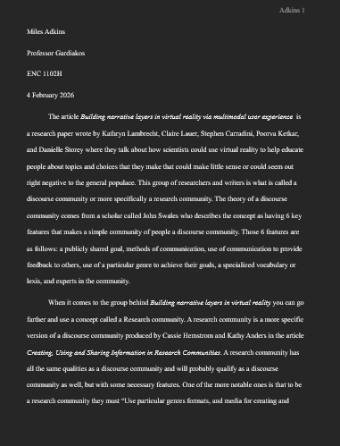

This SLO can almost be split into two smaller parts: one that a student
can evaluate criteria, and two students can act on criteria. I feel that any piece
of literature can be one or the other but not both, at least for the most part. My genre
analysis that you see to your right is more closer to the evaluation rather than
action however I feel that it is the closest piece of literature that uses both
to a degree openly. While my final research paper does act on the research I found
in this article it shows that I can write a research paper not that I can evaluate
it nessisarily.
This article to your right is an analysis of the research paper
Building Narrative layers in virtual reality via multimodal user experience
The paper that was my interoduction to the genre that is research papers, and an
interesting one at that. I liked reading as much as I did sense it liked being
somewhat different than what a accademic research paper would be generaly assumed
to look like. Which was fun for me because after my first semester at collage, I
had really grown in my ability to write how I like to write and not how they tought
me back in highschool.
This piece of literature was definarly the one I was least proud of in the end. I
don't enjoy writing about other articles, mostly because I feel like I lose my
voice that I have when I am able to talk about a topic I enjoy. If I were to
try again with this assignment I would probably look harder for a better article
that I was more interested in rather than stick with this one.
